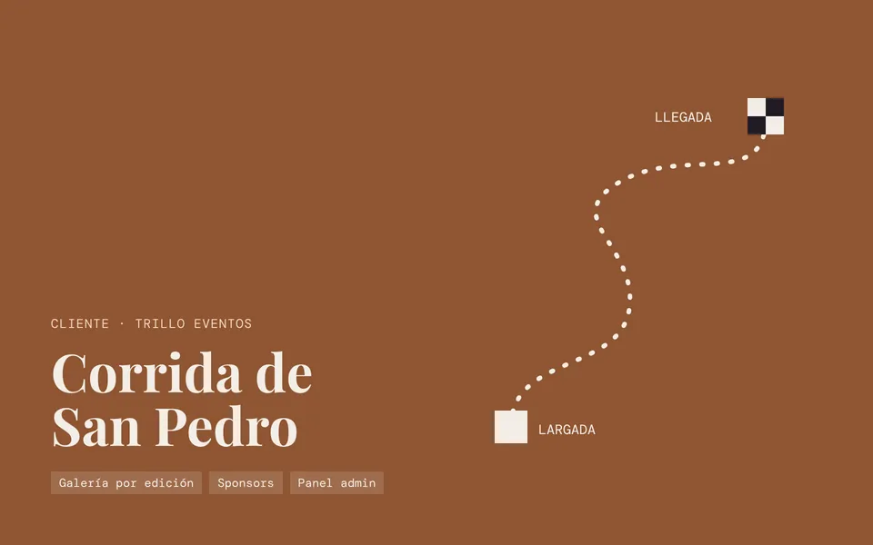
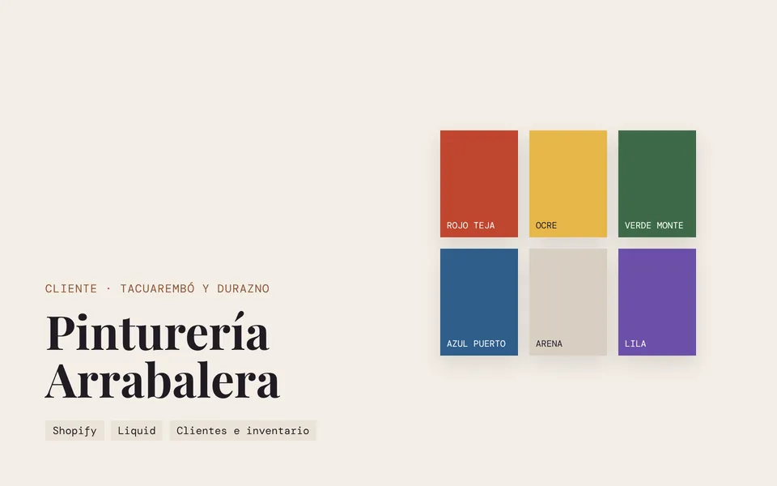
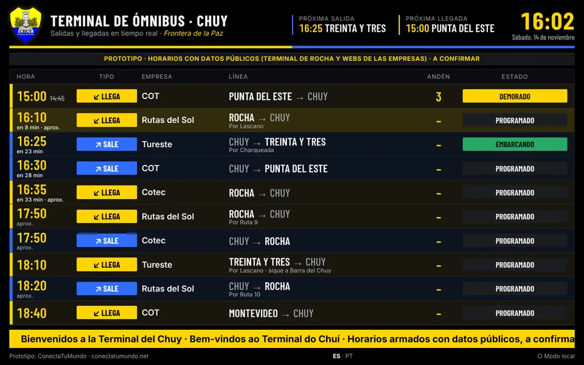
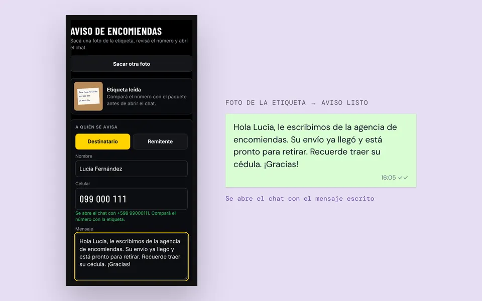
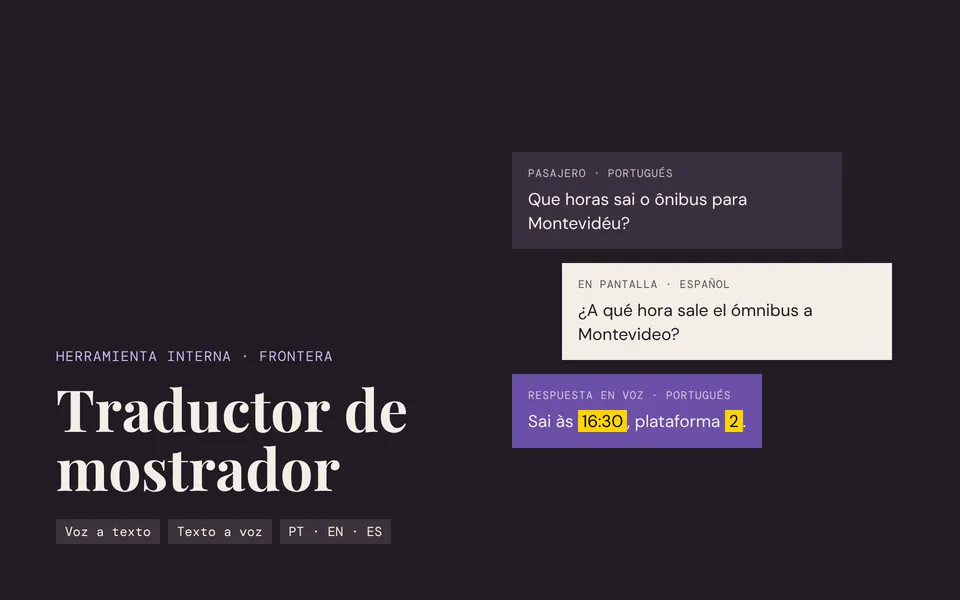
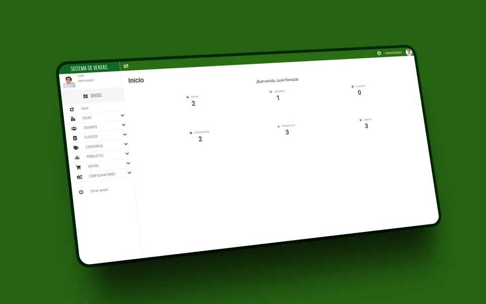

Proyecto propio · En producción
ConectaTuMundo
Plataforma para que los pequeños comercios uruguayos se digitalicen. Incluye un comparador de terminales POS con recomendador, un directorio de negocios, un editor de CV gratuito y búsqueda laboral por zona.
- React + Vite
- Firebase
- Cloudflare Pages
Ver conectatumundo.net

Cliente · Trillo Eventos
Corrida de San Pedro
Sitio del evento con galería de fotos ordenada por edición, gestión de sponsors y un panel de administración con acceso protegido.
- GitHub Pages
- Firestore
- Firebase Auth

Cliente · Tacuarembó y Durazno
Pinturería Arrabalera
Trabajo sobre su tienda en Shopify (tema en Liquid, dominio y DNS) y diseño de un sistema de clientes e inventario para la sucursal de Durazno.

Prototipo · Terminal de Chuy
Cartel de salidas y llegadas
Cartel para la tele de la terminal, en español y portugués, con un panel desde el celular para marcar demoras, embarques y andenes. Guarda un registro de horarios reales.

Herramienta interna · Mostrador
Avisos de encomiendas
Lee los datos del destinatario en el sistema de la agencia y deja listo el aviso por WhatsApp. Una versión para el celular lee con IA el teléfono escrito a mano en el paquete.
- AutoHotkey
- JavaScript
- Gemini API

Herramienta interna · Frontera
Traductor de mostrador
Panel para un solo operador que escucha al pasajero, muestra la traducción al español y responde en voz en su idioma, resaltando horarios y precios.
- JavaScript
- Reconocimiento de voz
- Texto a voz

Privado · Comercio
Sistema de ventas e inventario
Punto de venta local y privado para registrar ventas y controlar el stock desde la PC del comercio.
Sin demo pública: es de uso privado.